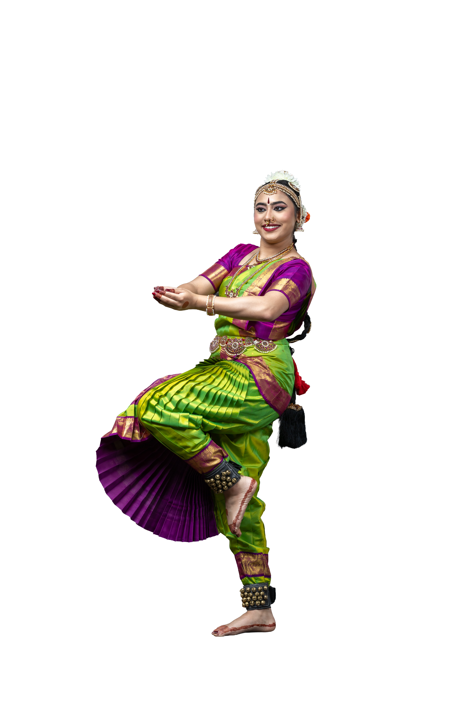
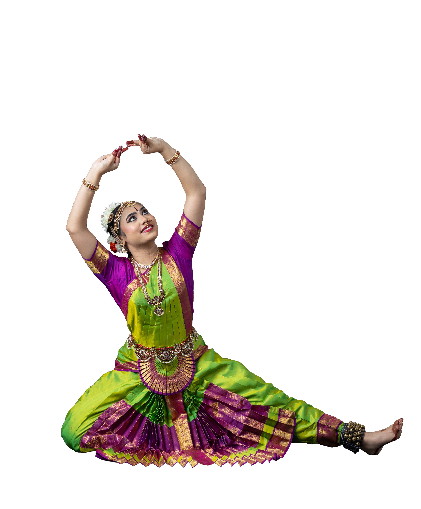
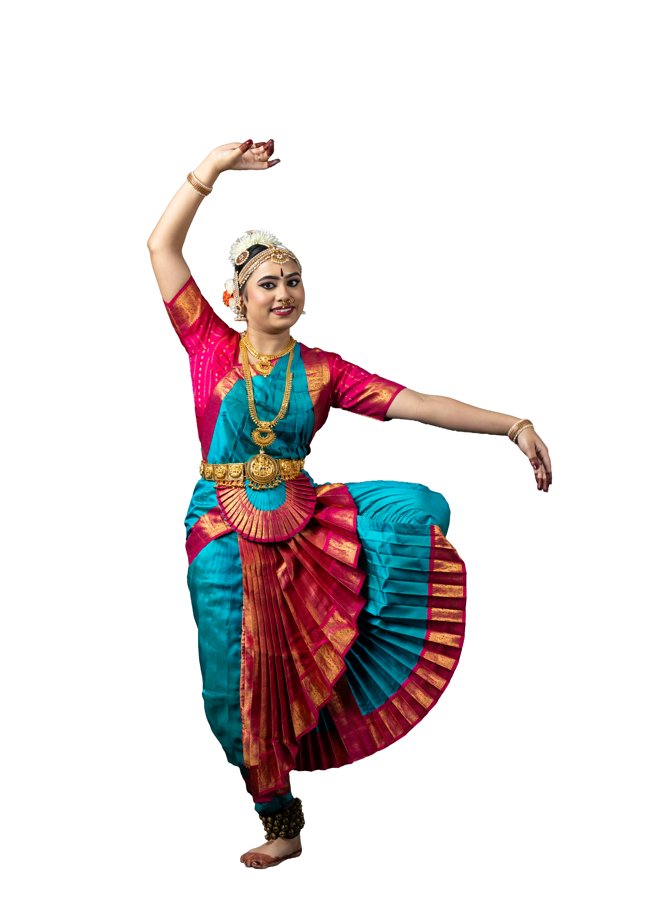
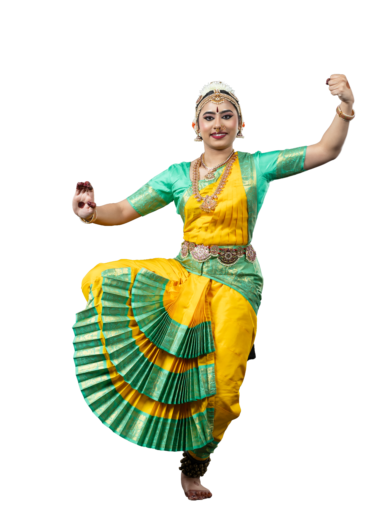
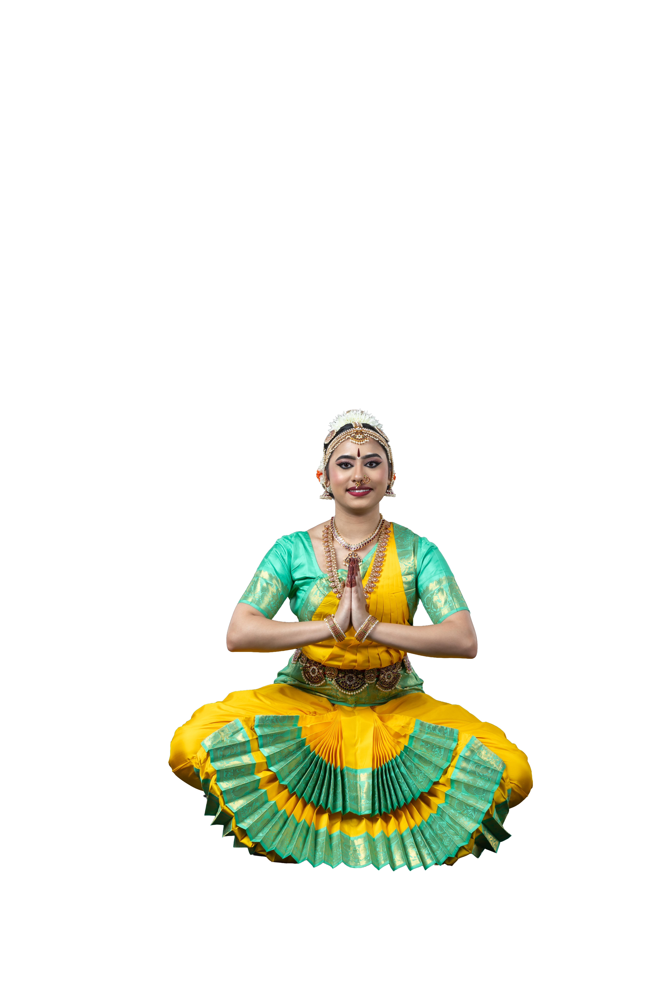

Mallari
Raga: Gambheera Nata | Tala: Adi

“Mallari” is a traditional piece in Bharatanatyam, an ancient Indian classical dance form that originates from Tamil Nadu. It is often performed as a part of a temple dance repertoire and is typically associated with worship and devotion. The term “Mallari” means “to call” or “to summon.” In this context, it often refers to the invocation of deities during temple rituals.
Ganesha Kriti
Raga: Kalyani | Tala: Adi

This Bharatanatyam composition is a devotional piece dedicated to Lord Ganesha, the remover of obstacles and the Lord of wisdom. The dancer depicts the various attributes of Ganesha, such as his elephant head, large ears, and his position as the Lord who grants wishes and removes difficulties.
Panchanadai Alaripu
Tala: Talamalika

Alarippu is the simplest piece in a Bharatanatyam recital. Alar means ‘to bloom’ and Alarippu means ‘flowering’. It comprises a set of movements, without any meaning or expression. The movements are performed for syllables set for a Tala (rhythm). This unique Alaripu has all the five jaathis or rhythm cycles - Tishra (3), Chatushra(4), Khanda(5), Mishra(7) and Sankeerna(9).
Kriti on Devi
Raga: Mohana Kalyani | Tala: Adi

This divine Bharatanatyam piece is dedicated to Shringara Shringeri, an incarnation or form of Goddess Saraswati, embodying the essence of love, beauty, and artistic grace. The composition celebrates her as the universal ruler of the kingdom of arts, music, and devotion.
Varnam
Raga: Neelambari | Tala: Adi
Varnam is the item where the dancer is tested on her capacity to perform Abhinaya (expression) and Nritta (dance). This can be treated as a benchmark to judge the artist’s talent. The item will contain many complex steps, and will have room for expressions. To perform this item, the dancer needs to have a lot of stamina and concentration. The lyrics can be in praise of a god, a king or a lover. This varnam is in praise of Lord Muruga.
Parathpara
Raga: Vachaspathi | Tala: Adi

Hindu God, Lord Shiva (the destroyer), is also known as Nataraja (Lord of Dance). An integral part of a Bharatanatyam recital is an item that sings the glory of Lord Shiva while providing an opportunity for the dancer to demonstrate her dancing abilities. In this item, the dancer praises and seeks the blessings of Lord Shiva, who displays a majestic posture with his left leg up, has a hooded snake around his neck, is dressed in tiger skin, with a crescent moon on his head, and is the consort of Sivakami who demonstrated supreme dancing abilities in Chidambaram.
Padam
Raga: Kapi | Tala: Adi

This lively and joyful Bharatanatyam composition celebrates the playful and divine nature of Lord Krishna, particularly focusing on his childhood in Gokulam. The song highlights Gopalan (Krishna) playing his flute amidst the vibrant and idyllic setting of Gokul. This is a beautiful composition in praise of Lord Krishna, who is joyfully herding the cows in Gokulam and where happiness and prosperity is in abundance due to his blessings.
Javali
Raga: Karaharapriya | Tala: Adi

A Javali is a light classical, fast-paced Telugu composition commonly featured in Carnatic music and Bharatanatyam. Known for its expressive themes of human love, longing, and sringara (romantic sentiment), this particular Javali was composed by Sri Karur Shivaramaiah in the early 1800s. In this piece, the hero expresses his deep longing for the heroine.
Thillana
Raga: Sindhubhairavi | Tala: Adi

This is usually the last item in any Bharatanatyam performance. Thillana is a dance of exuberant joy and full of rhythmic movements and postures. It typically also has complicated Muktayas or Sholkattu (ending of any step or adavu). Thillana is mainly a Nritta piece, which might have a charana, meaningful lyrics for which Abhinaya (facial expressions) are choreographed. This Thillana is in praise of Lord Krishna.
Mangalam
Raga: Gambheera Nata | Tala: Adi

The Bharatanatyam recital concludes with the Mangalam- meaning an auspicious ending. Here, the dancer does Namaskaram (salutation) to the Gods, the Guru and the audience to conclude the recital.